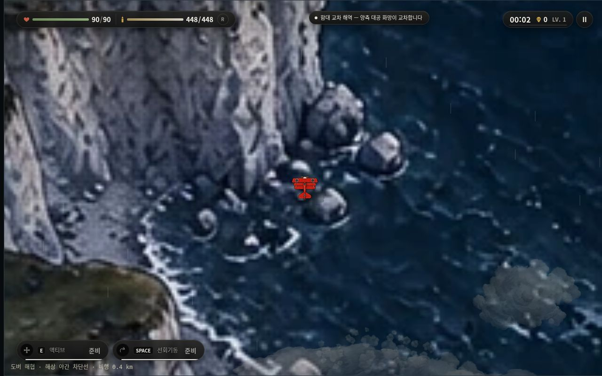
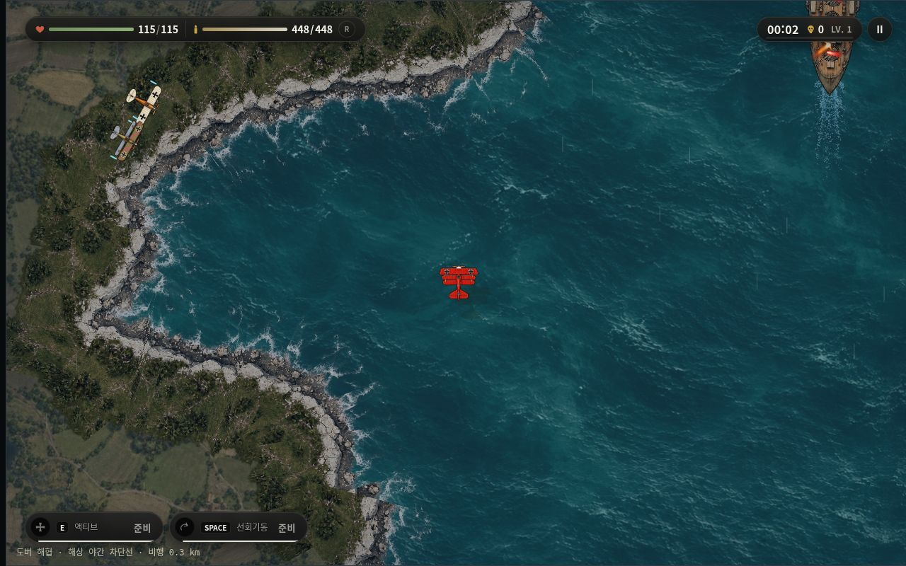
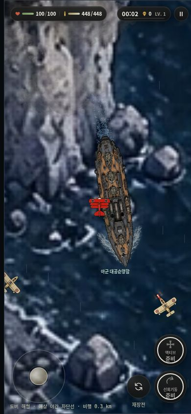
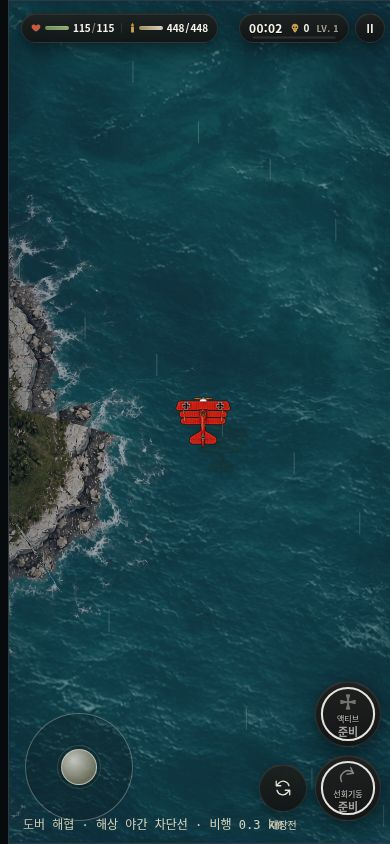
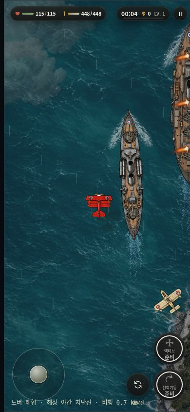

도버 해협 — 실제 게임 수정 전후
동일한 해안 검사 지점. PC 1280×800 / 모바일 390×844. 브라우저 원본 캡처입니다.
맵 6144×9216 유지 · 기존 바다와 지면 원화 · 위에서 내려다본 백악 해안 · 바다에서만 항해하는 선박.
브랜치·기준 커밋·테스트·빌드 상세 결과
PC 수정 전
PC 수정 후
모바일 수정 전
모바일 수정 후
모바일 해협 이동 · 선박